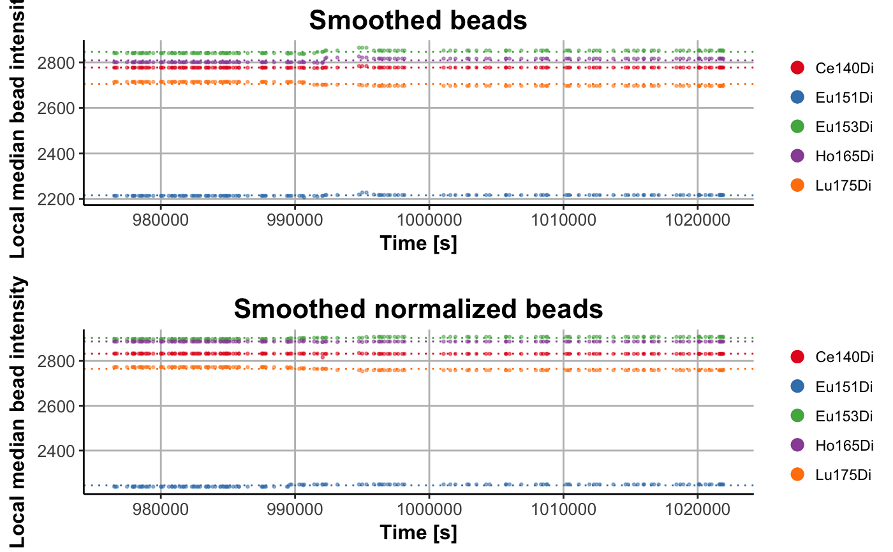

an implementation of Finck et al.'s normalization of mass cytometry data using bead standards with automated bead gating.
normCytof(x, y, ...) # S4 method for flowFrame normCytof(x, y, out_path = NULL, remove_beads = TRUE, norm_to = NULL, k = 500, trim = 5, verbose = TRUE, plot = TRUE) # S4 method for character normCytof(x, y, out_path = NULL, remove_beads = TRUE, norm_to = NULL, k = 500, trim = 5, verbose = TRUE)
| x | a |
|---|---|
| y |
|
| ... | optional arguments. |
| out_path | a character string. If specified, outputs will be generated here. If NULL
(the default), |
| remove_beads | logical. If TRUE (the default) beads will be removed and normalized cells and beads returned separately. |
| norm_to | a |
| k | integer width of the median window used for bead smoothing. |
| trim | a single non-negative numeric. A median +/- ... mad rule is applied to the preliminary population of bead events to remove bead-bead doublets and low signal beads prior to estimating normalization factors. |
| verbose | logical. Should extra information on progress be reported? |
| plot | logical. Should bead vs. DNA scatters and beads before vs. after normalization be plotted? |
if out_path=NULL (the default) a flowFrame of the
normalized data (if remove=FALSE) or flowSet containing
normalized cells and beads (if remove=TRUE). Else, a character of the
location where output FCS files and plots have been generated.
Finck, R. et al. (2013). Normalization of mass cytometry data with bead standards. Cytometry A 83A, 483-494.
#>#>#> A flowSet with 2 experiments. #> #> column names: #> Time Event_length Y89Di Ru96Di Ru98Di Ru99Di Ru100Di Ru101Di Ru102Di Rh103Di Ru104Di Pd105Di Pd106Di Pd108Di Pd110Di In113Di In115Di Sn120Di Ba138Di La139Di Ce140Di Pr141Di Nd142Di Nd143Di Nd144Di Nd145Di Nd146Di Sm147Di Nd148Di Sm149Di Nd150Di Eu151Di Sm152Di Eu153Di Sm154Di Gd155Di Gd156Di Gd157Di Gd158Di Tb159Di Gd160Di Dy161Di Dy162Di Dy163Di Dy164Di Ho165Di Er166Di Er167Di Er168Di Tm169Di Er170Di Yb171Di Yb172Di Yb173Di Yb174Di Lu175Di Yb176Di Ir191Di Ir193Di Pt194Di Pt195Di Pb208Di Bi209Di Center Offset Width Residual